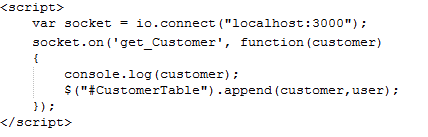
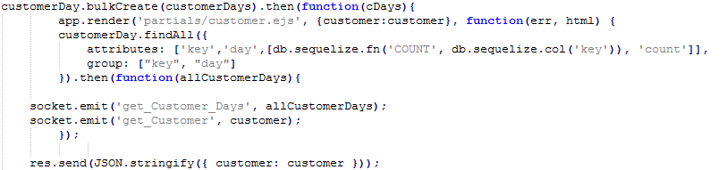
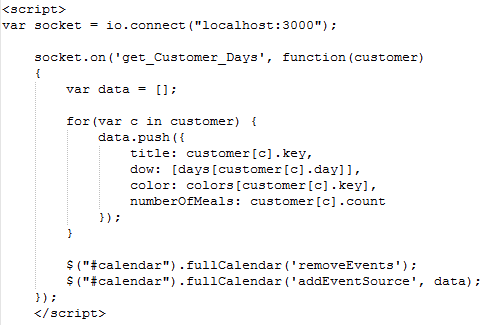

My Journey of confusion with Socket started by doing the tutorial that is hosted by Socket on their website. The goal of the tutorial was to make a chat system that when you submitted info into a text box it would appear live in the above chat window. Once that was going I ahd to take the knowledge I learnt from that and try and implement it into our class project. The end goal was to get newly added customers and their wanted meals to be displayed on a seperate page (ViewCustomers) when the user put the details in, without the need of a refresh as well as having the amoount of items per days show on the calender live when they're updated so the chefs know how many of a specific item needs to be made on Friday for example. Socket can be used to communicate between pages and servers to do some very cool things with live updates and passing data.
Below I have added some examples of the code obtained through the Socket tutorial and have written about what it does.

The above code is a function using socket, calling socket using "io." as it was previously assigned to. This method will output to the terminal when someone connects. At this point just getting everything going and making sure it's working.

Now for something cooler, getting socket to return a input text value. Here we can see a script to run when the submit button is pressed, to get the chatmessage and then output it, or "emit" it, which is a socket method to output data, it is doing this within an appending list (so the messages go down the page, similar to facebook messenger).
The above code is the method to call the new data from the "main" page within the router file. when it gets a customer by calling the custoomer method, it will append it to the table of customers that is visible on the "ViewCustomers" page. This all happens live when the data is saved on the "AddCustomers" page.
After we got the customers working, the focus shifted to getting the amount needed per day displaying on the calender page so that the chefs or whoever needs to know can know how much of a specific item is needed for a certain day. The code below will demonstrate how we did this!
Here is how we got all the data to pass through. This piece of code was done with Tom Paine since he was designing the Index page with the calender which displays the amount of meals per day. TThe purpose of this code is to fill the custoomer variable with data that is needed to be displayed on the Index and parcel it up to be received oon the Index and be displayed there.
The above code is how we passed the data needed on the Index page over. We fill an array with the data received from looping through the results of customer, getting the day and the count etc so we can display how many meals are needed on which days and print the relevant data.